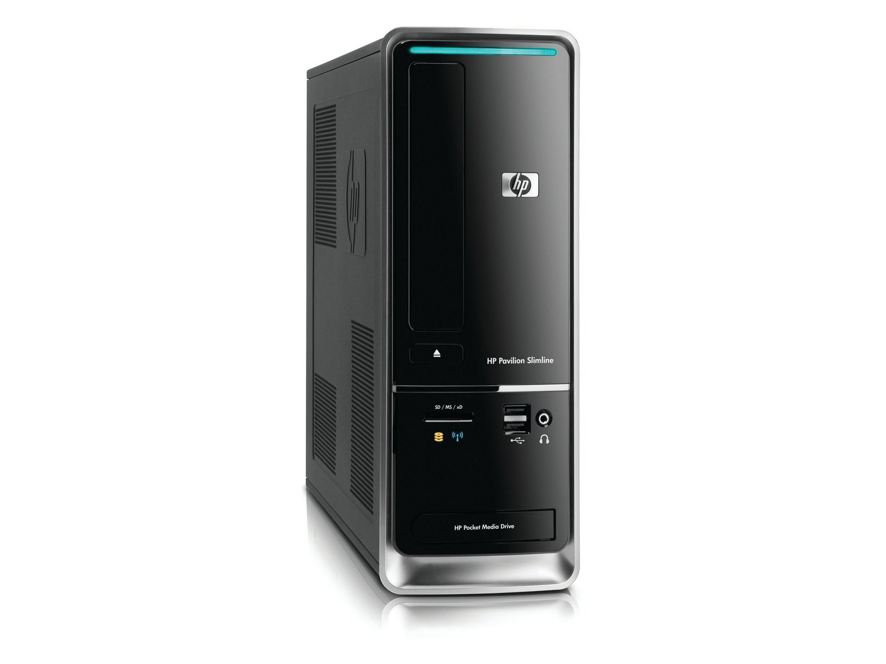

Our Mission
Our goal is to provide a streamlined and powerful operating system that enhances productivity without compromising on performance.
We focus on delivering a user-friendly interface and robust functionality while maintaining a small footprint.
About the developer
OSGW Interactive is a personal creation of mine that I started due to my deep passion for creating and learning about computer systems and software creation. My journey began at a young age, starting with a old HP Pavilion Slimline s5000 PC running Windows 7,That my grandma had at her house, and everyweeked around the age of 10 I would browse the web and be facinated by how everything was built.
Over the past 7 years since I've developed a basic understanding of various programming languages including HTML, CSS, Python, and Java.
As the sole developer behind OSGW interactive, I take pride in every aspect of the software that I create or dream of making. From the very first concept to the final product, I focus on what I expect the user to want buy offering high-quality products. I'm now working on this BigSkyOS project in my free time when i'm not at school or doign homework. I feel that I've developed the skills to focus on this creation of mine that has been a dream since I was a kid.